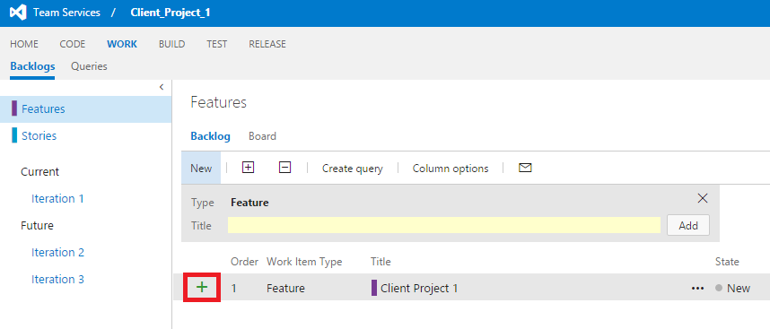
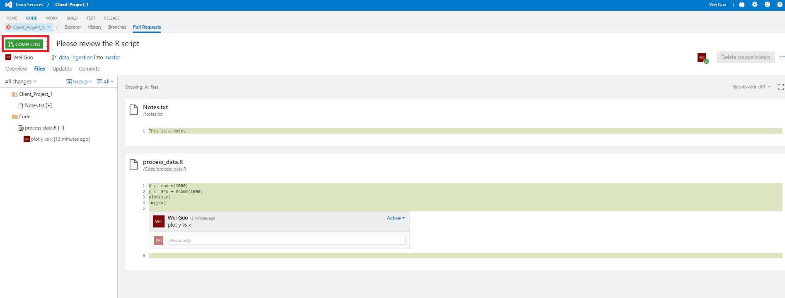

This document describes how a data scientist can execute a data science project in a trackable, version controlled, and collaborative way within a project team. It covers instructions on (1) how to do sprint planning, (2) how to add work items to sprint, (3) link the work items with coding activities tracked by git, and (4) how to do code review. Features (3) and (4) are the benefits you can get naturally if you choose to use VSTS.
The following instructions are developed based on that VSTS is the code hosting platform, which is the one we choose for TDSP at Microsoft. If other code hosting platform is used for your group, the way of project execution might be slightly different, and some functions might not be easy to enable, such as function 6.
In TDSP, there are four mostly used types of work items: Feature, User Story, Task, Bug. Here are their definitions. Please keep in mind that all work items are collected in a single backlog of the team project. There is no backlog at the git repository level under a team project.
Sprint planning is very useful for project prioritization, and resource planning and allocation, especially almost ubiquitously each data scientist is carrying on multiple projects, each project takes months to complete, and different projects proceed with different paces and are at different stages at the same time. On VSTS server, you can easily create, manage, and track work items in your team project, and conduct sprint planning to ensure that your project is moving forward as expected.
After your project repository is created under a team project, go to team overview page and click Manage work --> Features --> New, Type in the feature name (usually your project name), and click Add to include this feature in the backlog.
Double click the feature you just created, you can fill in some descriptions, assign team members for this feature, and set planning parameters for this feature. You can also link this feature to the project repository by clicking Add link under the Development section. After finishing editing the feature, you can click Save & Close to exit.
Under the feature, stories can be added to describe major steps needed to finish the project (feature). Click the + sign next to the feature under backlog view to add a new story. In the pop up window, you can edit the details of the story, like the status, description, comments, planning, priority, etc.

You can link this story to an existing repository by clicking + Add link under Development.
Tasks are specific detailed steps that are needed to complete each story. After all tasks of a story are completed, the story should be completed too. Click the + sign next to the story item, select task, and then fill in the detailed information of this task in the pop-up window.
After the features, stories, and tasks are created, you can view them in the backlog or board to track their status.
VSTS provides a convenient way to connect a work item (story or task) with a git branch. This enables you to track what has been done on the process of completing a work item.
You can connect a work item to a new branch. Double click a work item, and in the pop-up window, click Create a new branck under + Add link. Then, you need to provide detailed information of this new branch, such as the branch name, base git repository and the branch. The git repository can only be repository under the same team project that the work item belongs to. The base branch can be the master branch, or some existing branch.


A good practice is that you create a branch for each story work item. Then, for each task work item, you create a branch based from the story branch. Such branching mechanism will be very helpful when you have multiple people working on different stories of the same project, or you have multiple people working on different tasks of the same story. Each member working on different branch, and on each branch each member working on different codes and/or other artifacts can avoid conflicts as much as possible.
The following picture depicts the recommended branching strategy for TDSP. Please keep in mind that you might not need so many branches, especially when you only have one or two people working on the same project. But separating development branch from master branch is always a good practice. This can help prevent the release branch from being interrupted by the development activities. More complete description of git branch model can be found in A Successful Git Branching Model.

After the branch is created, in shell command (Windows or Linux), run the following command to switch to the branch you want to work on. Change the <branch name> to master switches back to the master branch.
git checkout <branch name>
After you switch to the working branch, you can start working on that work item by developing artifacts like coding, documentation, etc.
You can also link a work item to an existing branch. In the detail page of a work item, instead of clicking Create a new branch, you click + Add link. Then, select the branch you want to link the work item to.

Now suppose you make some change to the branch for the work item, such as you add a R file on the branch in your local machine.
Assuming that you are in the branch for this work item in your git shell. You can commit the added R file to the branch using the following Git commands, where data_ingestion is the branch name.
git status
git add .
git commit -m"added a R scripts"
git push origin data_ingestion
After a few commits and pushes, if you feel that the current branch should be merged to its base branch, you should make a pull request on VSTS server.
Go to the main page of your team project, click CODE. Then, select the git repository name that you want to merge the branches. Then click Pull Requests, click New pull request to create a pull request review before the work on the branch is merged to its base branch.
Fill in some description about this pull request, add reviewers, and send it out.
After the pull request is created, your reviewers will get an email notification to review the pull requests. The reviewers need to check whether the changes are working or not, test the changes with the requester if possible. Based on the assessmemt of the reviewers, they can approve or reject the pull request.


After the review is done, the working branch will be merged to its base branch by clicking the Complete button. You may choose to delete the working branch after merging.
You will find that on the top left corner, it is marked as COMPLETED.

When you go back to the repository under CODE, you will be told that you are switched to master branch.

You can also use the following Git commands to merge your working branch to its base branch and delete the working branch after merging.
git checkout master
git merge data_ingestion
git branch -d data_ingestion
This R-markdown based utility provides a flexible and interactive tool to evaluate and explore data sets. Users can quickly generate reports from the data set with minimal coding. The report includes descriptive statistics of the data set and variables, association analysis among variables, principal component analysis of variables, and other visualization tools. Users can export the exploration results to a final report, which can be delivered to clients, or used to make decisions on which variables to include in the modeling step.
At this time, the tool only works on data-frames in memory. A .yaml file is needed to specify parameters of the data-set and exploration. For detailed information, please go to Data-Quality-Report-Utility.
This utility provides a customizable semi-automated tool to perform model creation with hyper-parameter sweeping, and compare the accuracy of those models.
The model creation utility is an R markdown file that can be run to produce a self-contained html output with a table of contents (ToC) for easy navigation through different sections. When the markdown file is run (knit), three algorithms (regularized regression using glmnet package, random forest using randomForest package, boosting trees using xgboost package) are executed to give trained models. Accuracy of the models are then compared, and relative feature importance plots are reported. Currently, there are two utilities, one is for binary classification task and the other one is for regression task . The primary differences being the way control parameters and accuracy metrics are specified for these learning tasks.
A Yaml file is used as input to specify data input (SQL source or R-Data file), what portions of data are to be used for training and testing, which algorithms to run, control parameters for model optimization (cross-validation or bootstrapping, folds of cross-validation, etc.), and the hyper-parameter sets for each algorithm. The number of algorithms, the number of folds for optimization, the hyper-parameters, and the number of hyper-parameter sets to sweep over can be modified in the Yaml file to run the models quickly (e.g. with lower number of CV folds, lower number of parameter sets) or more comprehensively (higher number of CV folds, larger number of parameter sets), as needed.
For detailed information, please go to Modeling-Utility.